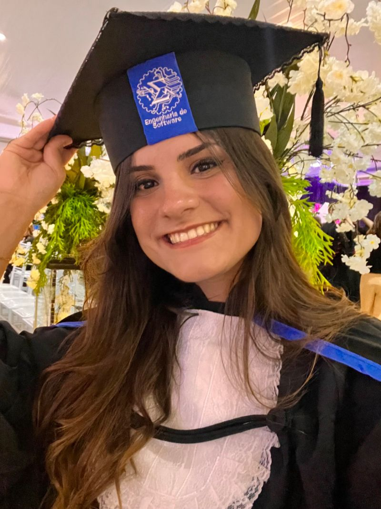

Rafaella Ballerini
Criadora de conteúdo sobre programação e tecnologia, Rafaella Ballerini guia pessoas que desejam iniciar na área de desenvolvimento de software. Ela possui um canal no YouTube e contas no Instagram e TikTok que contam mais de 500 mil seguidores nas três redes. Fundou a Comunidade Ballerini, que conta com mais de 30 mil membros para compartilhar conhecimento sobre programação. Já trabalhou como instrutora front-end na Alura, uma das maiores escolas de tecnologia do Brasil.
Instagram Linkedin YouTube